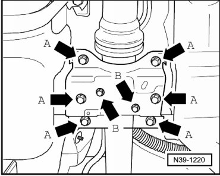
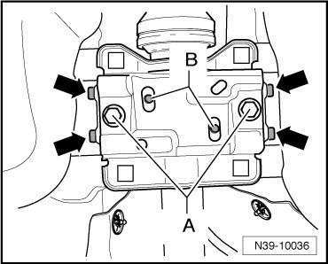
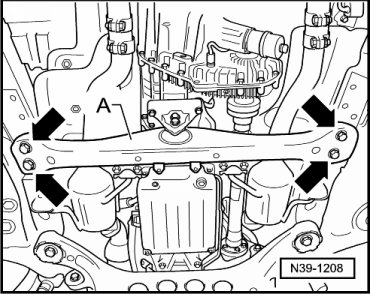
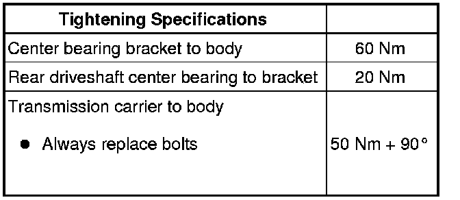

Rear Driveshaft Center Bearing
Rear Driveshaft Center Bearing
- If necessary, remove rear part of exhaust system:
- Remove bolts - arrows B -.

- Loosen bolts - arrows A - several turns.
- Align the center bearing bracket centrally to the lateral stops - arrows - on the body.

- Fix the center bearing bracket in place by tightening the two bolts - A -.
- Check if the threaded holes of the center bearing - B - are lined up with the slots of the bracket.
For slight deviations:
- Move the center bearing bracket laterally until the threaded holes and slots line up.
When doing so, make sure that the center bearing does not touch the body (driveshaft tunnel).
For larger deviations or if clearance between center bearing and body is minimal:

- Loosen the bolts - arrows - for transmission carrier by approximately 3 turns.
- Move the transmission laterally until the threaded holes of the center bearing and the slots of the center bearing bracket line up.
When doing so, make sure that the center bearing does not touch the body (driveshaft tunnel).
- Replace the individual bolts - arrows -, in succession, for transmission carrier and tighten them to specifications.
- Install the bolts - arrows B - and tighten the bolts - arrows A - and - arrows B -.
- If removed earlier, install rear part of exhaust system:
